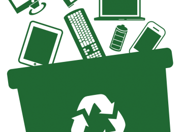

RESIGNIFIQUE
A E-Waste nasceu para resignificar o lixo eletrônico.
Promovemos o reaproveitamento e a sustentabilidade através da recuperação de rejeitos tecnológicos, buscando sempre o menor impacto ambiental.
O melhor para a sociedade e o planeta.